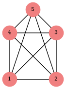
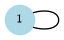
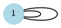
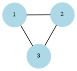
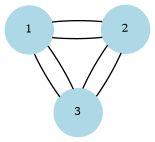

pgr_planarFaces - Experimental¶
pgr_planarFaces - Identifies the faces of a planar embedding and lists every
edge-face incidence for an undirected graph.
Experimental
Advertencia
Possible server crash
These functions might create a server crash
Advertencia
Funciones experimentales
No son oficialmente de la versión actual.
Es probable que oficialmente no formen parte de la siguiente versión:
Las funciones no podrían hacer uso de ANY-INTEGER ni ANY-NUMERICAL
El nombre puede cambiar.
La firma puede cambiar.
La funcionalidad puede cambiar.
Las pruebas de pgTap pueden faltar.
Posiblemente C/C++ necesite revisión.
Hay documentación que, en dado caso, podría ser necesario reescribir.
Puede ser necesaria retroalimentación por parte de la comunidad.
Disponibilidad
Version 4.1.0
Nueva función experimental.
Descripción¶
In a planar embedding, the graph is drawn in the plane so that edges meet only at vertices. A face is a maximal connected region of the plane bounded by edges.
Every bounded face is a cycle of edges enclosing an interior region. The exterior face, also called the unbounded face, is the region outside the outermost cycle.
Once an embedding is fixed, each undirected edge has a left and a right side when walked in the direction the embedding assigns around each vertex.
In a connected planar undirected graph, each edge separates exactly two faces, so it contributes one row on the left and one on the right.
pgr_planarFaces returns
those incidences: face_id names the face, edge_id is the border edge, and
side is 1 (left) or 2 (right) relative to the embedding.
The function first computes a planar embedding with the Boyer-Myrvold planarity
test, then walks faces with Boost planar_face_traversal.i
Características
Funciona para grafos no dirigidos.
Loops and paralell edges are preserved.
Costs are ignored
They are used to determine the existance of an edge
When the graph is not planar it will emit an “ERROR”
Run pgr_isPlanar - Experimental first
Each vertex receives exactly one core number
Results:
The result has one row per edge-side pair
Graph with \(|E|\) edges yields \(2|E|\) rows.
Number of faces: * Obeys Euler’s formula: \(|V| - |E| + |F| = 2\) * On a graph with \(C\) components: \(|V| - |E| + |F| = 2C\).
Number of returned rows: \(|V|\).
Ordered by
nodeascending.No rows returned when no edges found. Emits a
NOTICE
Running time: \(O(|E| + |V|)\)
Loop and parallel removal: \(O(|E|)\)
Peeling algorithm: \(O(|E|)\)
Sorting: \(|V| log |V|\)
Firmas¶
Resumen
(seq, face_id, edge_id, side)- Ejemplo:
Faces of the full Datos Muestra graph
SELECT * FROM pgr_planarFaces(
'SELECT id, source, target, 1 AS cost FROM edges'
);
seq | face_id | edge_id | side
-----+---------+---------+------
1 | 1 | 6 | 1
2 | 1 | 7 | 1
3 | 1 | 4 | 1
4 | 1 | 1 | 1
5 | 1 | 1 | 2
6 | 1 | 2 | 1
7 | 1 | 5 | 1
8 | 1 | 8 | 2
9 | 1 | 7 | 2
10 | 1 | 6 | 2
11 | 2 | 4 | 1
12 | 2 | 10 | 1
13 | 2 | 12 | 2
14 | 2 | 13 | 1
15 | 2 | 15 | 1
16 | 2 | 16 | 1
17 | 2 | 3 | 2
18 | 2 | 2 | 2
19 | 3 | 5 | 2
20 | 3 | 3 | 1
21 | 3 | 16 | 2
22 | 3 | 9 | 2
23 | 4 | 8 | 1
24 | 4 | 11 | 1
25 | 4 | 12 | 1
26 | 4 | 14 | 1
27 | 4 | 14 | 2
28 | 4 | 10 | 2
29 | 5 | 11 | 2
30 | 5 | 9 | 1
31 | 5 | 15 | 2
32 | 5 | 13 | 2
33 | 6 | 17 | 1
34 | 6 | 17 | 2
35 | 7 | 18 | 1
36 | 7 | 18 | 2
(36 rows)
The query returns 36 rows, twice the 18 edges in
edges, consistent with \(2|E|\).face_idruns from 1 through 7 on this network; each id is one face of the embedding, including the unbounded exterior face (hereface_id = 1borders the outer layout of the city block).Every
edge_idappears twice, once withside = 1and once withside = 2.Rows follow the counterclockwise walk of each face in the computed embedding.
Have \(3\) components then number if faces = \(17 - 18 + 7 = 6 = 2 \times 3\).
Parámetros¶
Parámetro |
Tipo |
Descripción |
|---|---|---|
|
SQL de aristas descritas más adelante. |
Consultas Internas¶
SQL aristas¶
Columna |
Tipo |
x Defecto |
Descripción |
|---|---|---|---|
|
ENTEROS |
Identificador de la arista. |
|
|
ENTEROS |
Identificador del primer vértice de la arista. |
|
|
ENTEROS |
Identificador del segundo vértice de la arista. |
|
|
FLOTANTES |
Peso de la arista ( |
|
|
FLOTANTES |
-1 |
Peso de la arista (
|
Donde:
- ENTEROS:
SMALLINT,INTEGER,BIGINT- FLOTANTES:
SMALLINT,INTEGER,BIGINT,REAL,FLOAT
Columnas de resultados¶
Columna |
Tipo |
Descripción |
|---|---|---|
|
|
Sequential value starting from 1. |
|
|
Identifier of the face in the computed embedding. |
|
|
Identifier of the edge that borders the face. |
|
|
1 when the edge borders the face on the left side.2 when the edge borders the face on the right side. |
Ejemplos Adicionales¶
Non-planar graphs¶
Face extraction requires a planar graph. Subgraphs containing a \(K_5\) or
\(K_{3,3}\) minor cannot be embedded without crossings; pgr_planarFaces
raises ERROR: Graph is not planar in that case. The pgr_isPlanar - Experimental
documentation shows a non-planar subgraph of sampledata (edges highlighted in
blue in the figure).

Create a \(K_5\) graph.
CREATE TEMP TABLE k5 AS
SELECT id, source, target, cost
FROM (VALUES
(1::BIGINT, 1::BIGINT, 2::BIGINT, 1::BIGINT),
(2, 1, 3, 1),
(3, 1, 4, 1),
(4, 1, 5, 1),
(5, 2, 3, 1),
(6, 2, 4, 1),
(7, 2, 5, 1),
(8, 3, 4, 1),
(9, 3, 5, 1),
(10, 4, 5, 1))
AS t(id, source, target, cost);
SELECT 10
Test planarity: dont execute when is not planar.
SELECT pgr_isPlanar('SELECT id, source, target, cost FROM k5');
pgr_isplanar
--------------
f
(1 row)
Or get an error: (not shown)
SELECT * FROM pgr_planarFaces('SELECT id, source, target, cost FROM k5');
Planarity of loops¶
One loop graph with only one vertex:

SELECT * FROM pgr_planarFaces(
'SELECT 1 AS id, 5 AS source, 5 AS target, 2 AS cost'
) ORDER BY seq;
seq | face_id | edge_id | side
-----+---------+---------+------
1 | 1 | 1 | 1
2 | 2 | 1 | 2
(2 rows)
Two loop graph with only one vertex:

SELECT * FROM pgr_planarFaces(
'SELECT 1 AS id, 5 AS source, 5 AS target, 1 AS cost, 1 AS reverse_cost'
) ORDER BY seq;
seq | face_id | edge_id | side
-----+---------+---------+------
1 | 1 | 1 | 1
2 | 1 | 1 | 1
3 | 2 | 1 | 2
4 | 3 | 1 | 2
(4 rows)
Triangular graphs¶
Triangular graph (no duplicate edges)

CREATE TEMP TABLE tri_edges AS
SELECT id, source, target
FROM (VALUES
(11, 1, 2),
(12, 2, 3),
(13, 1, 3))
AS t(id, source, target);
SELECT 3
SELECT * FROM pgr_planarFaces(
'SELECT id, source, target, 1 AS cost FROM tri_edges'
) ORDER BY seq;
seq | face_id | edge_id | side
-----+---------+---------+------
1 | 1 | 11 | 1
2 | 1 | 12 | 1
3 | 1 | 13 | 2
4 | 2 | 11 | 2
5 | 2 | 13 | 1
6 | 2 | 12 | 2
(6 rows)
Six rows are returned: \(2 \times 3\) edges.
\(face\_id = 1\) is the interior face.
\(face\_id = 2\) is the exterior face. face.
Each edge lists
1on one face and2on the other.
Triangular graph (duplicate edges)

SELECT * FROM pgr_planarFaces(
'SELECT id, source, target, 1 AS cost, 1 AS reverse_cost
FROM tri_edges'
) ORDER BY seq;
seq | face_id | edge_id | side
-----+---------+---------+------
1 | 1 | 11 | 1
2 | 1 | 12 | 1
3 | 1 | 13 | 2
4 | 2 | 11 | 2
5 | 2 | 11 | 1
6 | 3 | 11 | 1
7 | 3 | 13 | 1
8 | 3 | 12 | 2
9 | 4 | 12 | 2
10 | 4 | 12 | 1
11 | 5 | 13 | 2
12 | 5 | 13 | 1
(12 rows)
Ver también¶
Boost Graph Library: Planar Face Traversal
Boost Graph Library: Boost: Boyer Myrvold planarity
Wikipedia: Planar graph
Boyer, J. M. and Myrvold, W. J. (2004). On the Cutting Edge: Simplified O(n) Planarity Algorithms by Edge Addition. Journal of Graph Algorithms and Applications, 8(3), 241-273.
Índices y tablas